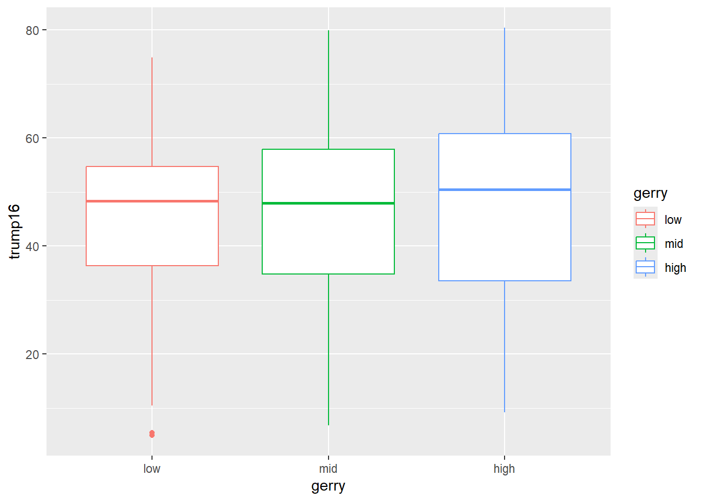
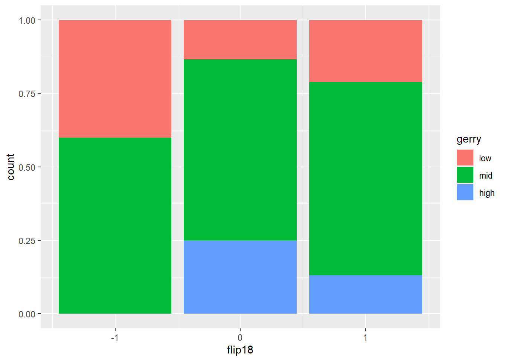
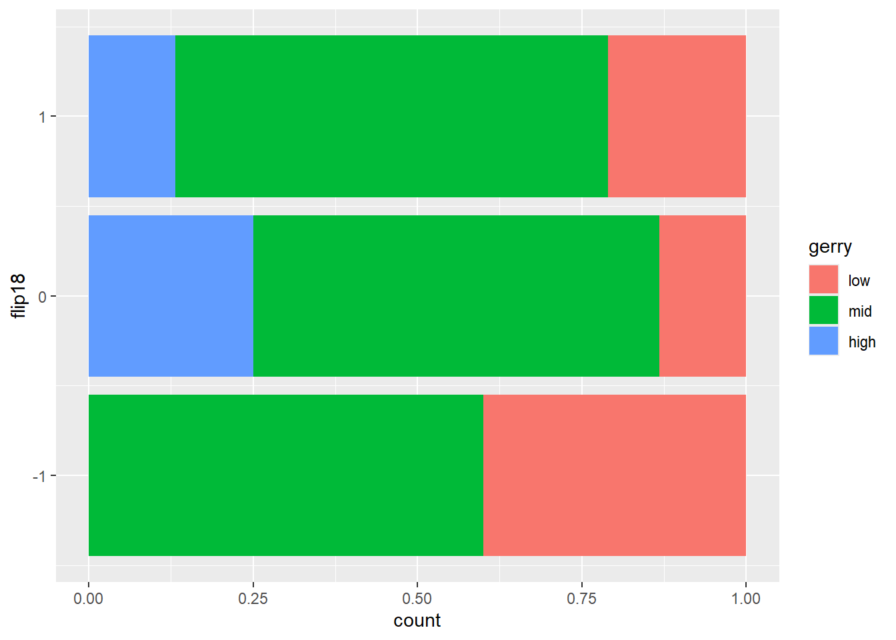
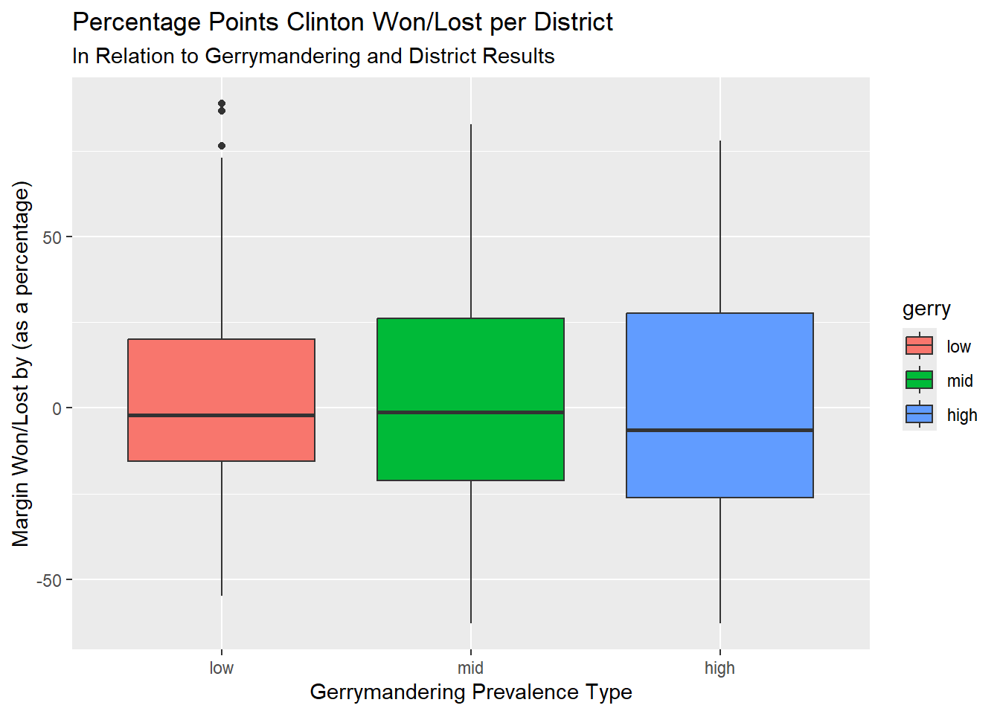
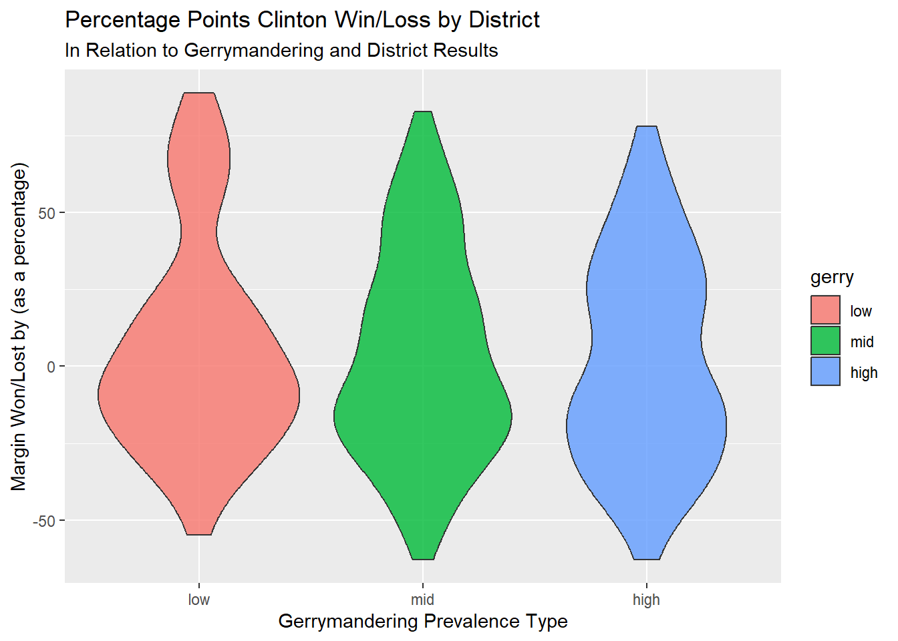

suppressWarnings(library(tidyverse))
library(usdata)
library(sjPlot)
library(gtsummary)
gerrymander <- usdata::gerrymander
#glimpse(gerrymander)AE03 - Exploring gerrymandring
Getting started
Load the tidyverse, usdata, and sjPlot packages, and get the gerrymander data out of the usdata package. View the data using glimpse.
1. Congressional districts per state
Which state has the most congressional districts? The least? How many congressional districts are there in this state? Use functions such as table, tbl_summary or count.
gerrymander %>%
count(state) %>%
arrange(desc(n))# A tibble: 50 × 2
state n
<chr> <int>
1 CA 53
2 TX 36
3 FL 27
4 NY 27
5 IL 18
6 PA 18
7 OH 16
8 GA 14
9 MI 14
10 NC 13
# ℹ 40 more rowsCalifornia has the most districts at 53. The states with 1 district are Arkansas, Delaware, Montana, North Dakota, South Dakota, Vermont, and Wyoming.
2. Districts at the tails
Make side-by-side box plots of percent of vote received by Trump in the 2016 Presidential Election by prevalence of gerrymandering. Identify any Congressional Districts that are potential outliers — points that fall well outside the whiskers of their box, meaning that district’s Trump vote share was unusually high or low compared to other districts with the same gerrymandering prevalence. What information can you share about them?
ggplot(data = gerrymander,
mapping = aes(x = gerry, y = trump16, color = gerry)
) +
geom_boxplot()
Looking at the percentage of votes in a district for Trump in the 2016 presidential race by gerrymandering prevalence, the median for districts with high prevalence is a little more than 50%, a little less than 50% for middle prevalence, and low prevalence is slightly more than the middle prevalence’s percentage.
Taking a closer look at Trump’s percentage of votes within low gerrymandering districts, we see 2 districts are outliers. These 2 districts have less than 10% of their votes for Trump. Let’s pick districts that have low gerrymandering and less than 10% of their votes for Trump.
gerrymander %>%
select(district, trump16, gerry) %>%
filter(trump16 < 10.0 & gerry == "low")# A tibble: 2 × 3
district trump16 gerry
<chr> <dbl> <fct>
1 NY-13 5.4 low
2 NY-15 4.9 low We see the 2 outlying districts are the 13th and 15th districts of New York, with the 13th having 5.4% of its votes for Trump and the 15th having 4.9%.
3. Gerrymandering and flipping
This relationship can be looked at from two directions — does gerrymandering predict a 2018 flip, and does a 2018 flip predict gerrymandering? Support both with a visualization and summary statistics. The plot answers “what does the mix look like within each group?”; the table gives the exact proportions the plot is showing. Write 1-2 bullet points about what you noticed from each plot. Use specific numbers in your answer.
Direction 1: Is a Congressional District more likely to have high prevalence of gerrymandering if a Democrat was able to flip the seat in the 2018 election? To compare the breakdown of gerrymandering prevalence within each flipped group, make sure flip18 is on the x axis and that your percents add up to 100% within each category.
ggplot(data = gerrymander,
mapping = aes(x = flip18, fill = gerry)
) +
geom_bar(position = "fill")
tbl_summary(data = gerrymander,
by = flip18,
include = gerry
)| Characteristic | -1 N = 51 |
0 N = 3921 |
1 N = 381 |
|---|---|---|---|
| gerry | |||
| low | 2 (40%) | 52 (13%) | 8 (21%) |
| mid | 3 (60%) | 242 (62%) | 25 (66%) |
| high | 0 (0%) | 98 (25%) | 5 (13%) |
| 1 n (%) | |||
Direction 2: Is a Congressional District more likely to be flipped to a Democratic seat if it has high prevalence of gerrymandering, or low prevalence? Same two variables, just flipped — so now gerry is on the x-axis. Again, make sure your percents add up to 100% within each category.
ggplot(data = gerrymander,
mapping = aes(y = flip18, fill = gerry)
) +
geom_bar(position = "fill")
tbl_summary(data = gerrymander,
by = gerry,
include = flip18
)| Characteristic | low N = 621 |
mid N = 2701 |
high N = 1031 |
|---|---|---|---|
| flip18 | |||
| -1 | 2 (3.2%) | 3 (1.1%) | 0 (0%) |
| 0 | 52 (84%) | 242 (90%) | 98 (95%) |
| 1 | 8 (13%) | 25 (9.3%) | 5 (4.9%) |
| 1 n (%) | |||
Based on the first plot, a Congressional District is less likely to have high prevalence of gerrymandering if a Democrat was able to flip the seat in the 2018 election. If a Democrat flipped the seat in 2018 (when \(x = 1\)), districts with high gerrymandering make up only 5 (4.9%) of the total districts that flipped to a Democrat.
For the second, a district with low gerrymandering prevalence is more likely to be flipped to a Democrat compared to a district with high prevalence. This is because 8 (13%) of the total districts that flipped to a Democrat had a low prevalence compared to the 5 (4.9%) districts that flipped having high prevalence.
4. Gerrymandering and presidential margin
Using mutate, create a new variable, margin16, measuring how many percentage points Clinton won or lost by in each district (clinton16 - trump16). Does gerrymandering prevalence relate to how lopsided the 2016 presidential race was in that district? Report the min, mean, and max margin by gerry level, then visualize the full distribution with a violin + boxplot combo. Describe the shape, center, and spread of each group.
gerrymander %>%
mutate(margin16 = clinton16 - trump16) %>%
summarise(min_margin = min(c(margin16, gerry)),
avg_margin = mean(c(margin16, gerry)),
max_margin = max(c(margin16, gerry))
)# A tibble: 1 × 3
min_margin avg_margin max_margin
<dbl> <dbl> <dbl>
1 -63 2.67 88.9The minimum margin is -63%. This means that Clinton’s worst loss in a district was losing by 63 percentage points. The mean margin is 2.67% points, which means on average, Clinton won by 2.67 percentage points in each district. The maximum margin, or Clinton’s highest win, was winning by 88.9 percentage points in one district. Now, let’s look at the full distribution using a violin plot and boxplot.
ggplot(data = gerrymander,
mapping = aes(x = gerry, y = (clinton16 - trump16), fill = gerry)) +
labs(title = "Percentage Points Clinton Won/Lost per District",
subtitle = "In Relation to Gerrymandering and District Results",
x = "Gerrymandering Prevalence Type",
y = "Margin Won/Lost by (as a percentage)") +
geom_boxplot()
ggplot(data = gerrymander,
mapping = aes(x = gerry, y = (clinton16 - trump16), fill = gerry)) +
labs(title = "Percentage Points Clinton Win/Loss by District",
subtitle = "In Relation to Gerrymandering and District Results",
x = "Gerrymandering Prevalence Type",
y = "Margin Won/Lost by (as a percentage)") +
geom_violin(alpha = 0.8)
The violin plot does a good job showing how gerrymandered districts relate to how lopsided the 2016 presidential race was. For all three prevalence types, a larger spread of the data lies between -37.5% and 25%, with a very slight right skew for each. I say very slight since the boxplot shows the medians for all three of them is just below 0. On average, Clinton lost by a very close percentage in a district. With the three violin figures, the widest spread of data for each is from 0% to -25%.
For districts with low gerrymandering prevalence, we see that most of the data lies between -50% (with it tapering off there) and 25%, where the data continues to taper until above 75%. With middle gerrymandering prevalence, our data is bottom-heavy (near -25%), and narrows its way towards 62.5%. High gerrymandering districts look most like a violin. The figure is widest where Clinton lost in districts by nearly 25 percentage points, and the next widest spot is where Clinton won by 25 percentage points in a districts. This figure’s districts appear to be the most polarized in how they voted.
So, the average district had Clinton narrowly losing in the presidential race across all three gerrymandering prevalences. And, looking at the boxplot, the 50th and 75th quartile has a longer spread than the 25th and 50th quartile.